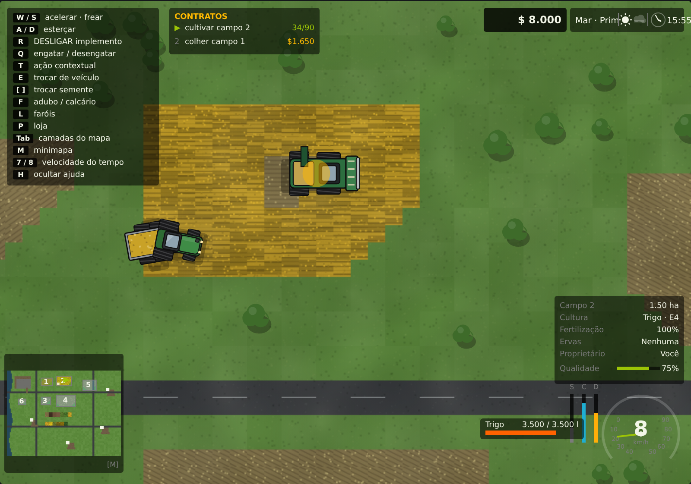
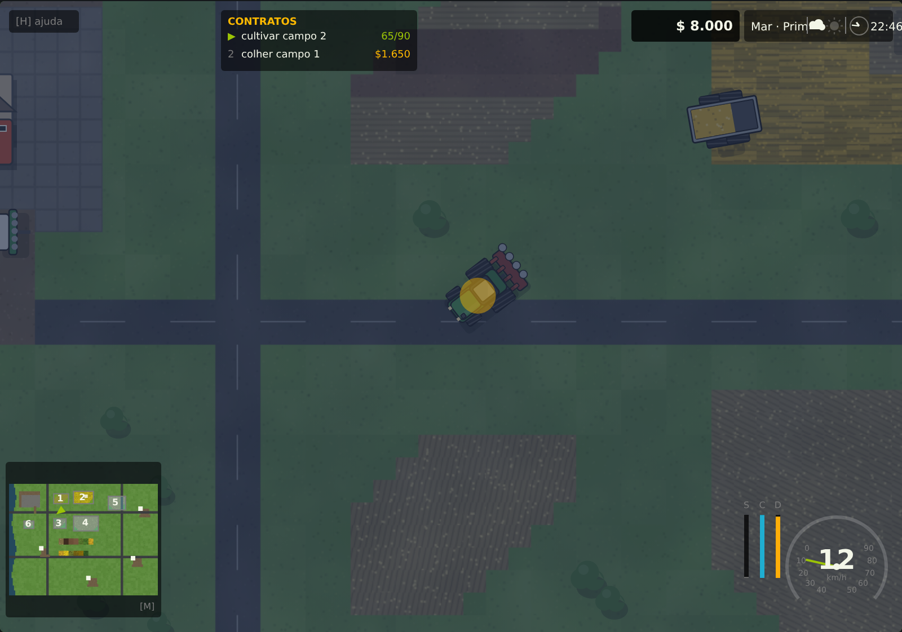
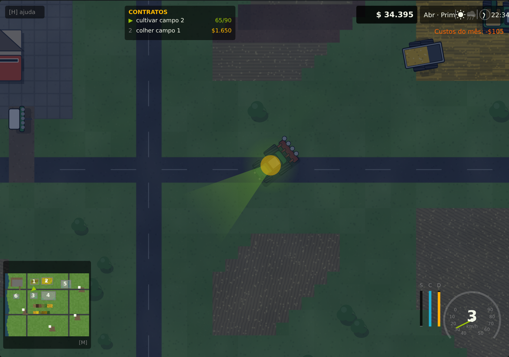
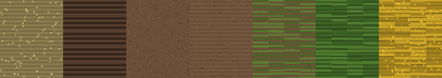
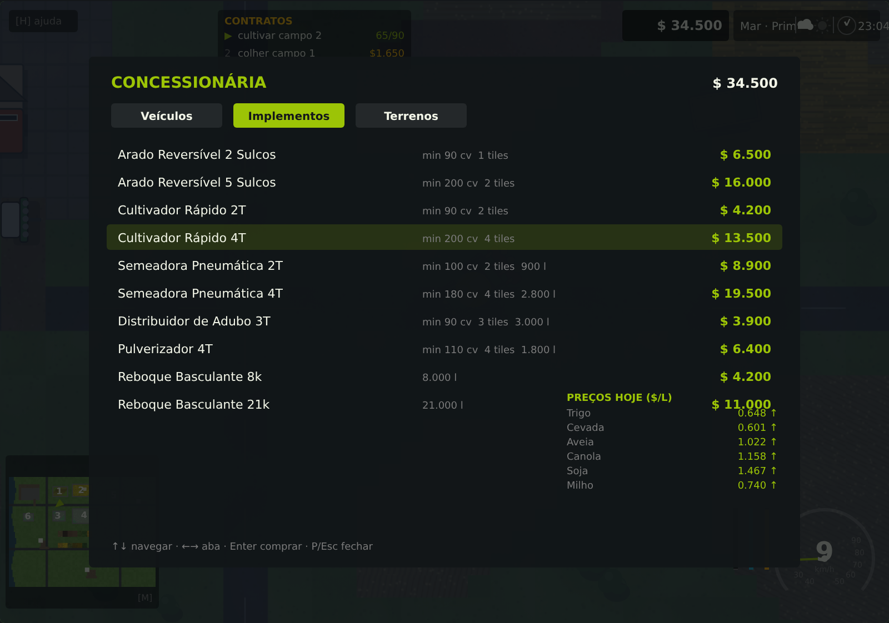
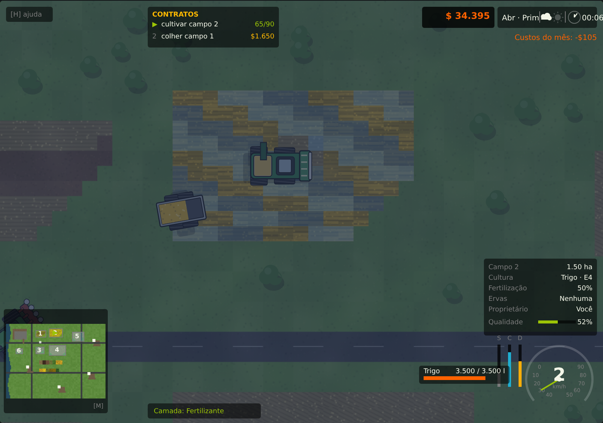
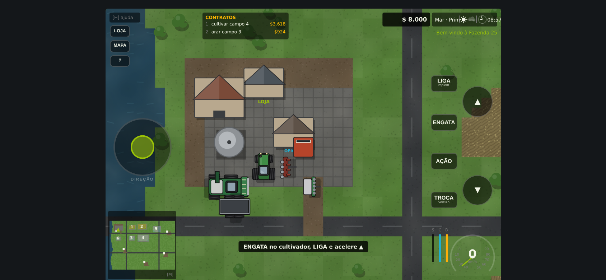

Engate o implemento, baixe a ferramenta e trabalhe o campo de verdade: arar, cultivar, semear, adubar, colher, transbordar e vender na hora certa. Cada passada fica marcada no solo — no ângulo exato em que você passou.
Pagamento único, sem assinatura · Funciona offline depois de aberto · Português do Brasil

Nada de plantar tocando na tela e esperar o cronômetro. Aqui você dirige a máquina, acerta a manobra de cabeceira e vê a faixa de trabalho nascer atrás do implemento. O campo guarda tudo: onde você arou, onde adubou, onde ficou erva daninha.


Só semear e colher são obrigatórios. Todo o resto é decisão sua — e cada decisão aparece na conta no fim da colheita.
Cultivar é rápido. Arar é lento e caro, mas rende 15% a mais e mata a erva daninha.
Escolha a cultura pelo preço do mês. A semeadora recusa solo que você não preparou.
Duas passadas de fertilizante somam 45% de rendimento. Calcário soma outros 15%.
Erva daninha nasce sozinha e come o rendimento. Pulverize cedo e recupere 20%.
A lavoura avança um estágio por mês. Passou três meses madura, murcha e você perde tudo.
Colher na chuva rende metade. Colher depois pode custar a janela. Sua escolha.
O tanque enche no meio do campo. Pare, descarregue no reboque e volte.
Cada posto tem preço diferente e satura se você despejar tudo no mesmo lugar.
Cada quadra guarda o ângulo da última passada. Os sulcos do arado, as fileiras de plantio e o restolho seguem o rumo real em que a máquina andou.

| Cultura | Rendimento | Preço base | Meses | Colheitadeira |
|---|---|---|---|---|
| Trigo | 90 L | $ 0,607 | 4 | de grão |
| Cevada | 96 L | $ 0,563 | 4 | de grão |
| Aveia | 57 L | $ 0,958 | 3 | de grão |
| Canola | 58 L | $ 1,085 | 4 | de grão |
| Soja | 45 L | $ 1,400 | 4 | de grão |
| Milho | 92 L | $ 0,684 | 4 | plataforma de milho |
| Girassol | 52 L | $ 1,211 | 4 | plataforma de milho |
| Batata | 413 L | $ 0,400 | 4 | de raízes |
| Beterraba | 578 L | $ 0,310 | 5 | de raízes |
Rendimento por quadra de terra, antes dos bônus. Com o campo bem tratado, dobra.


Não é uma versão reduzida: é o jogo inteiro, com controles feitos para os dois polegares. Abra o link no navegador do celular, vire na horizontal e jogue.

Compra processada pelo nosso parceiro de pagamento. Acesso liberado por e-mail.
Não. O jogo é um arquivo que abre direto no navegador — Chrome, Edge, Firefox ou Safari. Não precisa de loja de aplicativo, conta ou plugin.
Se o navegador for dos últimos anos, roda. O jogo foi feito para ser leve: o quadro completo custa cerca de meio milissegundo de processamento, então sobra folga até em máquina modesta.
Funciona, com controles de toque próprios: volante analógico no polegar esquerdo e pedais no direito. Jogue na horizontal — o jogo avisa se você estiver na vertical.
Ainda não. Cada partida começa do zero, e uma sessão completa leva cerca de 15 minutos — tempo de sair do restolho e comprar sua segunda máquina. O salvamento está no plano de atualizações, que já vem incluído na sua compra.
Não. O Fazenda 25 é uma experiência para um jogador.
Só para baixar. Depois que o arquivo está no seu aparelho, ele roda offline.